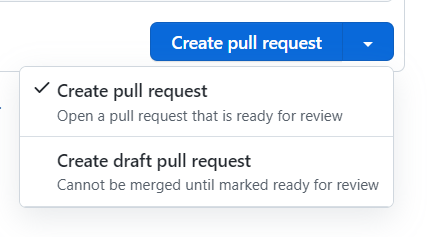

All.use github.how to guide
Use Github#
Introduction#
- In the following we use the abbreviations below:
- GH = GitHub
- PR = Pull Request
- RP = Responsible party (aka Team Leader)
- Everything we work on comes in the form of a GH Issues
- We call GH Issues "issues", and "tasks", (sometimes "tickets") interchangeably
- We avoid to call them bugs since many times we use GH to track ideas, activities, and improvements, and not only defects in the code
- We file tasks, prioritize them, and distribute the workload across the team
- We try to always work on high priority (aka, P0) tasks
Concepts#
Sprints#
- Sprints are weekly, Monday - Friday and consist of the Issues worked on during the week
- Sprints help us answer the questions
- What work should the team be focusing during this week?
- What did the team achieve last week?
- Anything worked on during a week is added to that week's Sprint
- Issues added to a Sprint but not worked on or completed during the week should not be removed (Issues can belong to more than one Sprint, and not removing helps measure how "overloaded" a Sprint was)
- Each week's Sprint has Issues added to it by Team Leaders before Monday's work begins
- Every Issue in a Sprint should be linked to a GH project
- To support adaptability and flexibility, Issues may be added to a Sprint mid-week (but Issues should not be removed). While this may require sacrificing other Issues in the Sprint, the point is to make the trade-off apparent
Projects#
- GitHub Projects are thematic groups of Issues that are somehow related by
their topic
- It may take multiple Sprints to complete all the Issues in an Project
- Most Projects are created around software components or user workflows (which may cross software components)
- For more information on GH Projects, see all.github_projects_process.reference.md
Issue#
- Each Issue is a piece of work to be done
- Issues are combined into Projects by topic
- An Issue has certain characteristics, i.e. labels
- An Issue has a progress status, (e.g.,
Todo,In progress,Done) - PRs are linked to work needed to complete an Issue
- An issue might not have an assignee but before execution of course it needs to be resolved
- An issue may be labeled as "Epic" if it has associated sub-issues.
- However, this is not a standard in our workflow.
- See also all.issue_workflow.explanation.md for the description of the concept of Issues as opposed to Ideas/Projects.
GH Actions#
- GitHub Actions are used to automate tasks like running tests, checking coverage, and deploying artifacts across our repositories
- Each workflow is defined in
.ymlfiles located under.github/workflows/in each repo - These actions run automatically based on defined triggers such as pushes, pull requests, or scheduled events
Disabling a GitHub Actions Workflow
To disable a particular GitHub Actions workflow without deleting or commenting out the code:
- Rename the file so that GitHub no longer recognizes it as a valid workflow:
mv .github/workflows/ci.yml .github/workflows/ci.yml.DISABLED - This prevents GitHub from executing the workflow, while preserving the file for future use or reference
- We follow this convention consistently across repos to make it visually obvious when a workflow is intentionally deactivated
-
Note: Only files ending in
.ymlor.yamlare treated as valid workflows by GitHubFor example, read about of our repos with workflows: - Helpers: all.gitleaks_workflow.explanation.md
Label#
- Labels are attributes of an issue (or PR), e.g.,
good first issue,PR_for_reviewers,duplicate, etc. - See the current list of labels and their descriptions at
Git Issue Labels
- The repos should always have labels in sync
List of Labels#
Blocking: This issue needs to be worked on immediatelyBug: Something isn't workingCleanupDesignDocumentation: Improvements or additions to documentationEnhancement: New feature or requestEpic: A high-level issue, possibly encompassing sub-issuesgood first issue: Good for newcomers > TODO(gp):Good_first_issueOutsource: Anybody can do itP0: Issue with a high priorityP1: Issue is important but has less priorityP2: Issue which is not urgent and has the lowest priorityPaused: An issue was started and then stoppedPR_for_authors: The PR needs authors to make changesPR_for_reviewers: The PR needs to be reviewed by team leaders > TODO(gp): ->PR_for_team_leadersPR_for_integrators: The PR needs to be reviewed by Integrators and possibly mergedReadings: Reading a book, article and getting familiar with codeTo close: An issue can be potentially closed > TODO(gp): -> To_close
Status#
- Each Issue in a Project is assigned a progress status
- We have the following status options:
Todo- Issues that are new, where the work has not started yet
assigneeshould be the tech lead of that area
In Progress- Issues that we are currently being worked on
In Review- Issues opened for review and testing
- Code is ready to be merged pending feedback
PR back to author- Feedback has been given on a PR, awaiting updates from the author
QADone- Issues that are done and are waiting for closing
- Integrators / team leaders are responsible for closing
stateDiagram
[*] --> Todo
Todo --> In_Progress
In_Progress --> In_Review
In_Review --> PR_back_to_author
PR_back_to_author --> In_Review
In_Review --> QA
QA --> Done
Done --> [*]PR#
- A pull request (PR) is an event where a contributor asks to review code they want to merge into a project
Issue Workflows#
Naming an Issue#
- Use an informative description, typically in the form of an action
- E.g., "Do this and that"
- Do not put too many details in the title making it too long
- E.g., the full path to the file where the changes should be made is better suited for the starting post, not the title
- We don't use a period at the end of the title
-
We prefer to avoid too much capitalization to make the Issue title easy to read and for consistency with the rest of the bugs
Good
Optimize Prometheus configuration for enhanced Kubernetes monitoringBad
Optimize Prometheus Configuration for Enhanced Kubernetes Monitoring -
They are equivalent, but the first one is more readable
Filing a New Issue#
- If it is a "serious" problem (bug) put as much information about the Issue as
possible, e.g.,:
- What you are trying to achieve
- Command line you ran, e.g.,
> i lint -f defi/tulip/test/test_dao_cross_sol.py - Copy-paste the error and the stack trace from the command line, no
screenshots, e.g.,
Traceback (most recent call last): File "/venv/bin/invoke", line 8, in <module> sys.exit(program.run()) File "/venv/lib/python3.8/site-packages/invoke/program.py", line 373, in run self.parse_collection() ValueError: One and only one set-up config should be true: - The log of the run
- Maybe the same run using
-v DEBUGto get more info on the problem
- Maybe the same run using
- What the problem is
- Why the outcome is different from what you expected
- Use check boxes for "small" actions that need to be tracked in the Issue (not
worth their own Issue)
- An issue should be closed only after all the checkboxes have been addressed OR the remaining checkboxes were either transformed into new issues in their own right (e.g. if the implementation turned out to be more complex than initially thought) OR have a reason for not being implemented
- These things should be mentioned explicitly before closing the issue (Element of Least Surprise.).
- We use the
FYI @...syntax to add "watchers"- E.g.,
FYI @cryptomtcso that he receives notifications for this issue - Authors and assignees receive all the emails in any case
- In general everybody should be subscribed to receiving all the notifications and you can quickly go through them to know what's happening around you
- E.g.,
- Assign an Issue to the right person
- There should be a single assignee to a Issue so we know who needs to do the work
- Assign to yourself if you are going to work on it
- Assign Integrators / Team leaders if not sure
- If you are not sure, leave it unassigned but
@tagIntegrators / team leaders to make sure we can take care of it - Assign an Issue to the right Project and Label
- Use
Blockinglabel when an issue needs to be handled immediately, i.e. it prevents you from making progress - If you are unsure then you can leave it empty, but
@tagIntegrator / team leaders to make sure we can re-route and improve the Projects/Labels
- Use
Updating an Issue#
- For large or complex Issues, there should be a design phase (in the form of GH
Issue, Google Doc, or design PR) before starting to write a code
- A team leader / integrator should review the design
- When you start working on an Issue, change its status to
In Progress- Try to use
In Progressonly for Issues you are actively working on - A rule of thumb is that you should not have more than 2-3
In ProgressIssues - Give priority to Issues that are close to being completed, rather than starting a new Issue
- Try to use
- Update an Issue on GH often, like at least once a day of work
- Show the progress to the team with quick updates
- Update your Issue with pointers to gdocs, PRs, notebooks
- If you have questions, post them on the bug and tag people
- Once the task, in your opinion, is done, change the status to
To Reviewso that Integrator / team leaders can review it - If we decide to stop the work, add a
Pausedlabel
Closing an Issue#
- A task is closed when PR has been reviewed and merged into
master - When, in your opinion, there is no more work to be done on your side on an
Issue, change its status to
Donebut do not close it- Integrators / team leaders will close it after review
- If you made specific assumptions, or if there are loose ends, etc., add a
TODO(user)or file a follow-up Issue - Done means that something is "DONE", not "99% done"
- "DONE" means that the code is tested, readable, and usable by other teammates
- Together we can decide that 99% done is good enough, but it should be a conscious decision and not comes as a surprise
- There should be a reason when closing an issue
- E.g. - closing as PR is merged
- E.g. - closing since obsolete
PR Workflows#
PR Labels#
PR_for_authors- There are changes to be addressed by an author of a PR
PR_for_reviewers- PR is ready for review by team leaders
PR_for_integrators- PR is ready for the final round of review by Integrators, i.e. close to merge
Filing a New PR#
General Tips#
- Implement a feature in a branch (not
master), once it is ready for review push it and file a PR via GH interface - We have
invoketasks to automate some of these tasks:> i git_branch_create -i 828 > i git_branch_create -b Cmamp723_hello_world > i gh_create_pr - If you want to make sure you are going in a right direction or just to confirm the interfaces you can also file a PR to discuss
- Mark PR as draft if it is not ready, use the
Convert to draftbutton-
Draft PR should be filed when there is something to discuss with and demonstrate to the reviewer, but the feature is not completely implemented

-
Filing Process#
- The title of the PR should match the name of the branch
- Look at the existing PRs in the repo for examples
- Add a description to help reviewers to understand what it is about and what you want the focus to be
- Add a pointer in the description to the issue that PR is related to - this
will ease the GH navigation for you and reviewers
- Do not link the PR to the issue through the dedicated GH functionality. The reason is that when they are linked, GH automatically closes the issue when the PR is merged, and this is inconvenient if there is more work to do. We always want to have control over when the issue is closed.
- Sometimes GH creates these links itself - usually when the PR description
contains keywords like "Fixes #
". So please avoid such phrasing and instead use something more abstract like "Related to # ".
- Put yourself in the "Assignees" field
- Add reviewers to the reviewers list
- For optional review just do
FYI @usernamein the description
- For optional review just do
- Add a corresponding label
- Usually the first label in the filed PR is
PR_for_reviewers - If it is urgent/blocking, use the
Blockinglabel
- Usually the first label in the filed PR is
- Make sure that the corresponding tests pass
- Always lint (and commit files modified by Linter) before asking for a review
Review#
- A reviewer should check the code:
- Architecture
- Conformity with specs
- Code style conventions
- Interfaces
- Mistakes
- Readability
- There are 2 possible outcomes of a review:
- There are changes to be addressed by author
- A reviewer leaves comments to the code
- Marks PR as
PR_for_authors
- A PR is ready to be merged:
- Pass it to integrators and mark it as
PR_for_integrators- Usually is placed by team leaders after they approve PR
- Pass it to integrators and mark it as
- There are changes to be addressed by author
Addressing a Comment#
- If the reviewer's comment is clear to the author and agreed upon:
- The author addresses the comment with a code change and after changing the
code (everywhere the comment applies) marks it as
RESOLVEDon the GH interface - Here we trust the authors to do a good job and to not skip / lose comments
- If the comment needs further discussion, the author adds a note explaining why he/she disagrees and the discussion continues until consensus is reached
- The author addresses the comment with a code change and after changing the
code (everywhere the comment applies) marks it as
- Once all comments are addressed:
- Re-request the review
- Mark it as
PR_for_reviewers